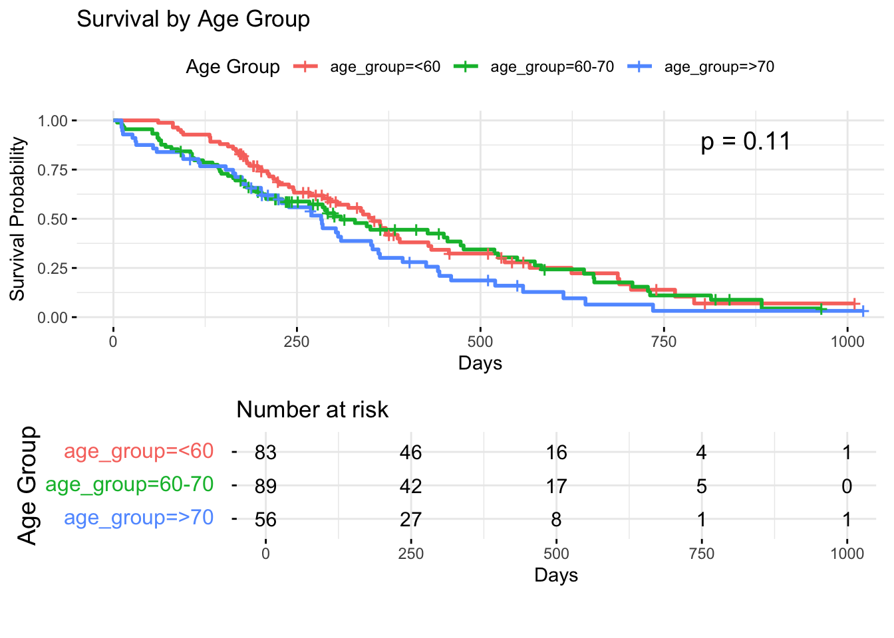

According to our analysis of individuals with lung cancer, survival durations varied greatly, with some barely living a few weeks and others living for several months. The longevity of patients following diagnosis seemed to be closely related to their overall health state as indicated by performance scores. For example, survival periods were often shorter for people who were less capable of performing daily duties. Men and women’s survival times differed slightly, according to our data, although these disparities were less pronounced than those associated with the patients’ medical conditions. In general, variables like health status appeared to be more important than simple demographics like age or sex.
# Missing values/values outside scale range are handled as shown in the warningggplot(lung, aes(x = time)) +geom_histogram(binwidth =50, fill ="lavender", color ="black") +labs(title ="Distribution of Survival Times",x ="Survival Time (days)",y ="Number of Patients" ) +scale_x_continuous(limits =c(0, NA)) +theme_minimal()
Warning: Removed 1 row containing missing values or values outside the scale range
(`geom_bar()`).
The histogram of survival times (in days) shows that most patients did not survive beyond one year. There is a right-skewed distribution, with a cluster of patients passing away within the first few months. This initial view sets the stage for exploring how patient characteristics might influence survival, and it highlights that lung cancer prognosis in this cohort is generally poor, with limited long-term survivors.
3.2.2 Overall Survival Function (Kaplan-Meier Curve)
The Kaplan-Meier curve above shows the probability of surviving over a given time point for all patients combined. The curve steadily declines over time, implying a continuous decrease in the proportion of patients alive as the study progresses. This graphically confirms that as time goes on, fewer patients remain alive. While this is expected intuitively, seeing the gradual drop helps us understand the overall pace of decline.
3.2.3 Survival by Sex
Code
fit_sex <-survfit(Surv(time, status) ~ sex, data = lung)ggsurvplot( fit_sex, data = lung,title ="Survival by Sex",xlab ="Days", ylab ="Survival Probability",legend.title ="Sex",pval =TRUE,pval.coord =c(800, 0.9),risk.table =TRUE,ggtheme =theme_minimal())
Two Kaplan-Meier curves are plotted: one for men and one for women. While both show declining survival over time, any difference between the two curves is relatively low. Neither sex appears to have a substantial survival advantage. Hence although minor differences may exist, sex does not appear to be a strong factor affecting survival in this dataset. Both men and women face similarly challenging prognoses. The p_value of 0.0013 implies that there is strong evidence to reject the null hypothesis of no difference in survival times between male and female lung cancer patients.
3.2.4 Distribution of Age
Code
p_hist_age <-ggplot(lung, aes(x = age)) +geom_histogram(binwidth =5, fill ="lavender", color ="black") +labs(title ="Histogram of Age", x ="Age (years)", y ="Count") +theme_minimal()p_box_age <-ggplot(lung, aes(y = age)) +geom_boxplot(fill ="lavender", color ="black") +labs(title ="Boxplot of Age", x ="", y ="Age (years)") +theme_minimal()p_box_age | p_hist_age
The above combination of a boxplot and a histogram shows that patients’ ages range widely, with a median age around mid-to-late 60s. There are no dramatic age outliers, and no strong indication that the sample skews heavily young or old. Hence while age is often a consideration in disease outcomes, this balanced distribution suggests that we must examine additional factors to understand the difference in survival.
3.2.5 Survival by Age Group (Younger vs. Older)
Code
median_age <-median(lung$age, na.rm =TRUE)lung <- lung |>mutate(age_group =ifelse(age <= median_age, "Younger", "Older"))fit_age_group <-survfit(Surv(time, status) ~ age_group, data = lung)ggsurvplot( fit_age_group, data = lung,title =paste("Survival by Age Group (Younger vs. Older than", median_age, ")"),xlab ="Days", ylab ="Survival Probability",legend.title ="Age Group",pval =TRUE,pval.coord =c(800, 0.9),risk.table =TRUE,ggtheme =theme_minimal())
Dividing patients into two groups—those younger than the median age and those older—shows similar patterns in survival. The curves for both groups track closely, indicating that only age may not be a decisive factor. So, though slight differences might exist, the similarity in curves reinforces the idea that age alone does not strongly predict survival differences in this dataset.
3.2.6 ECOG Performance Status Distribution
Code
ggplot(lung, aes(x =factor(ph.ecog))) +geom_bar(fill ="lavender", color ="black") +labs(title ="Distribution of ECOG Performance Status",x ="ECOG Score", y ="Count") +theme_minimal()
The bar chart above displays the frequency of different ECOG scores. Most patients fall into categories indicating some level of symptoms and reduced ability to perform daily tasks. This distribution shows that many patients are not fully asymptomatic, suggesting that their overall health status is compromised and may influence survival.
3.2.7 Survival by ECOG Performance Status
Code
lung_ecog <- lung[!is.na(lung$ph.ecog), ]fit_ecog <-survfit(Surv(time, status) ~ ph.ecog, data = lung_ecog)ggsurvplot( fit_ecog, data = lung_ecog,title ="Survival by ECOG Performance Status",xlab ="Days", ylab ="Survival Probability",legend.title ="ECOG Score",pval =TRUE,pval.coord =c(800, 0.9),risk.table =TRUE,ggtheme =theme_minimal(),tables.theme =theme(axis.text.y =element_text(size =12, margin =margin(r =10)),axis.title.y =element_text(size =14),plot.margin =margin(t =10, r =10, b =30, l =10) ),risk.table.fontsize =4,risk.table.height =0.4)
Distinct differences emerge when plotting survival curves separately for patients with better (lower) vs. worse (higher) ECOG scores. Patients with lower ECOG scores, indicating they are more functional, show higher survival probabilities at any given time point. This is a key highlight: general health and functional status appear closely linked to survival, underscoring the importance of patient well-being in determining outcomes.
3.2.8 Missing Value Patterns
Code
gg_miss_var(lung) +labs(title ="Missing Values by Variable",x ="Variables", y ="Number of Missing Values") +theme_minimal()
Visualizing missingness reveals that a few variables (like some performance measures or calorie intake data) have missing entries. The majority of essential variables, however, are complete. This gives the assurance that although some data are incomplete, the core variables used to assess survival are mostly intact. Missing data seem random rather than clustered in a particular patient group.
3.2.9 Distribution of Weight Loss (wt.loss)
Code
ggplot(lung, aes(x = wt.loss)) +geom_histogram(binwidth =5, fill ="lavender", color ="black") +labs(title ="Distribution of Weight Loss", x ="Weight Loss (lbs)", y ="Count") +theme_minimal()
Warning: Removed 14 rows containing non-finite outside the scale range
(`stat_bin()`).
The histogram of weight loss shows a wide range, with many patients experiencing moderate to significant weight reduction. Weight loss might reflect overall disease severity and patient frailty. Although not directly correlated here, this variable hints at another aspect of patient health worth exploring. Significant weight loss could contribute to shorter survival, though further analysis would be needed to confirm patterns.
3.2.10 Survival Curves by ECOG Status Stratified by Age Groups
Code
lung_age <- lung[!is.na(lung$age), ]lung_age$age_group <-cut(lung_age$age, breaks =c(0, 60, 70, Inf), labels =c("<60", "60-70", ">70"), right =FALSE)fit_age <-survfit(Surv(time, status) ~ age_group, data = lung_age)ggsurvplot( fit_age, data = lung_age,title ="Survival by Age Group",xlab ="Days", ylab ="Survival Probability",legend.title ="Age Group",pval =TRUE,pval.coord =c(800, 0.9),risk.table =TRUE,ggtheme =theme_minimal(),risk.table.fontsize =4,risk.table.height =0.4,tables.theme =theme(axis.text.y =element_text(size =12, margin =margin(r =10)),axis.title.y =element_text(size =14),plot.margin =margin(t =10, r =10, b =30, l =10) ))

The Kaplan-Meier survival curves by age group show that patients aged <60 have the highest survival probability, followed by those aged 60-70, and those aged >70, who have the lowest survival rate. While age influences survival, the differences are not dramatic, and other clinical factors likely play a larger role. The p-value indicates a statistical difference in survival between age groups, but age alone does not provide a clear distinction in survival outcomes.